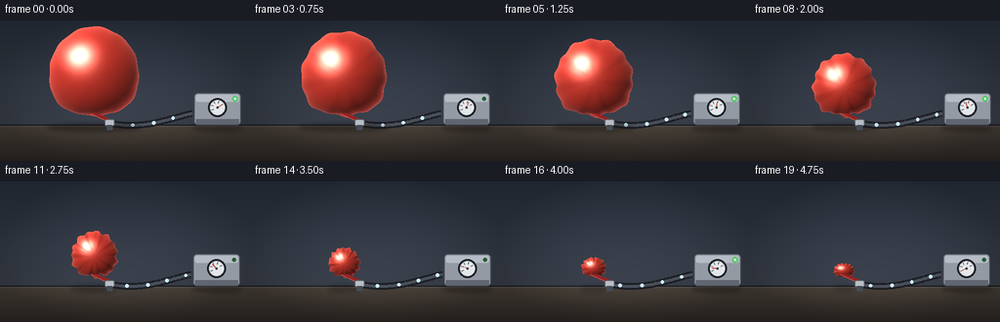
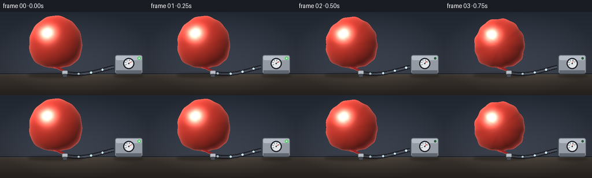

CODING AGENTS AS PIXEL WORLD MODELS
traex/Seed-2.1-Pro-0915 · phygen_020
点击播放 · 原生 RGB 像素
逐轮保存的候选
回放视频、检查图与代码变化。
每份候选均可单独播放。实际图片检查记录在下方工具轨迹中。
候选 01播放与检查图
点击播放 · 原生 RGB 像素


展开代码变化
--- 上一保存版本
+++ 本次保存版本
@@ -0,0 +1,322 @@
+"""Timelapse of air being forcefully extracted from a sealed thin balloon.
+
+Pure numpy/PIL procedural rendering. The scene is rendered at 2x resolution
+and downsampled so curved silhouettes and shading gradients stay smooth at
+the 256x144 target.
+"""
+import math
+import os
+
+import numpy as np
+from PIL import Image, ImageDraw, ImageFilter
+
+import artifact_io
+
+W, H = 256, 144
+N_FRAMES, FPS = 20, 4.0
+SS = 2
+W2, H2 = W * SS, H * SS
+
+TABLE_Y = 108 # 1x coordinates of the tabletop seam
+
+# Fixed scene anchors (1x coordinates).
+KNOT = np.array([112.0, 105.0])
+PUMP_PORT = np.array([196.0, 95.0])
+
+
+def smoothstep(x):
+ x = np.clip(x, 0.0, 1.0)
+ return x * x * (3.0 - 2.0 * x)
+
+
+def background():
+ """Wall gradient, baseboard and tabletop."""
+ yy = np.linspace(0.0, 1.0, H2, dtype=np.float32)[:, None, None]
+ wall_top = np.array([44, 52, 64], dtype=np.float32) / 255.0
+ wall_bot = np.array([62, 68, 80], dtype=np.float32) / 255.0
+ table_top = np.array([78, 70, 62], dtype=np.float32) / 255.0
+ table_bot = np.array([48, 42, 38], dtype=np.float32) / 255.0
+
+ seam = int(TABLE_Y * SS)
+ frame = np.empty((H2, W2, 3), dtype=np.float32)
+ wall_t = yy[:seam] / (seam / H2)
+ frame[:seam] = wall_top * (1 - wall_t) + wall_bot * wall_t
+ table_t = (yy[seam:] - seam / H2) / (1 - seam / H2)
+ frame[seam:] = table_top * (1 - table_t) + table_bot * table_t
+
+ # Baseboard and a faint sheen along the table edge.
+ frame[seam - 3:seam] *= 0.55
+ frame[seam:seam + 2] = np.minimum(frame[seam:seam + 2] + 0.08, 1.0)
+
+ # Soft vignette.
+ xx = np.linspace(-1.0, 1.0, W2, dtype=np.float32)[None, :, None]
+ vig = 1.0 - 0.22 * (xx ** 2 + (yy * 2.0 - 1.0) ** 2)
+ frame *= np.clip(vig, 0.75, 1.0)
+ return np.clip(frame, 0.0, 1.0)
+
+
+def bezier(p0, p1, p2, p3, u):
+ mu = 1.0 - u
+ return (mu ** 3 * p0 + 3 * mu * mu * u * p1
+ + 3 * mu * u * u * p2 + u ** 3 * p3)
+
+
+def draw_hose(img_draw, pump_dx):
+ """Thick dark hose from the balloon nozzle to the pump, plus air packets."""
+ p0 = KNOT * SS
+ p3 = (PUMP_PORT + np.array([pump_dx, 0.0])) * SS
+ p1 = p0 + np.array([34.0, 7.0]) * SS
+ p2 = p3 - np.array([26.0, -6.0]) * SS
+ us = np.linspace(0.0, 1.0, 60)
+ pts = [tuple(bezier(p0, p1, p2, p3, u)) for u in us]
+ img_draw.line(pts, fill=(28, 30, 36), width=7 * SS, joint="curve")
+ img_draw.line(pts, fill=(74, 80, 90), width=3 * SS, joint="curve")
+
+
+def draw_air_packets(img, frame_index, pump_dx):
+ """Bright packets travelling through the hose toward the pump."""
+ p0 = KNOT * SS
+ p3 = (PUMP_PORT + np.array([pump_dx, 0.0])) * SS
+ p1 = p0 + np.array([34.0, 7.0]) * SS
+ p2 = p3 - np.array([26.0, -6.0]) * SS
+ draw = ImageDraw.Draw(img)
+ for j in range(4):
+ u = (j * 0.25 + frame_index * 0.085) % 1.0
+ x, y = bezier(p0, p1, p2, p3, u)
+ r = 1.7 * SS
+ draw.ellipse([x - r, y - r, x + r, y + r], fill=(205, 235, 255))
+
+
+def balloon_geometry(t):
+ """Returns center, semiaxes and wrinkle parameters for this moment."""
+ ease = smoothstep(t)
+ scale = 1.0 - 0.80 * ease
+ a = 46.0 * scale
+ b = 50.0 * scale
+ # Late-stage droop: the crumpled skin sags and widens.
+ droop = smoothstep((t - 0.65) / 0.35)
+ b *= 1.0 - 0.28 * droop
+ a *= 1.0 + 0.12 * droop
+ neck_len = 8.0
+ bottom_y = (KNOT[1] - neck_len) * SS
+ cy = bottom_y - 0.82 * b * SS
+ cx = 96.0 * SS
+ return cx, cy, a * SS, b * SS, t
+
+
+def boundary_point(phi, cx, cy, a, b, t):
+ """Teardrop outline with neck pinch and growing wrinkle displacement."""
+ pinch = math.exp(-(phi / 0.55) ** 2)
+ k1, k2 = 6 + int(7 * t), 13 + int(5 * t)
+ wr_amp = 0.015 + 0.105 * t
+ env = 0.35 + 0.65 * pinch
+ wdisp = (wr_amp * math.sin(k1 * phi + 1.3) * env
+ + 0.5 * wr_amp * math.sin(k2 * phi + 0.4))
+ radial = 1.0 + wdisp
+ x = cx + a * math.sin(phi) * (1.0 - 0.45 * pinch) * radial
+ y = cy + b * math.cos(phi) * radial - b * 0.18 * pinch
+ return x, y
+
+
+def render_balloon(frame, geometry, t, frame_index):
+ cx, cy, a, b = geometry
+
+ ys, xs = np.mgrid[0:H2, 0:W2].astype(np.float32)
+ dx, dy = xs - cx, ys - cy
+ phi = np.arctan2(dx, dy) # 0 points toward the neck (down)
+
+ # Analytic radial boundary matching boundary_point().
+ pinch = np.exp(-(phi / 0.55) ** 2)
+ k1, k2 = 6 + int(7 * t), 13 + int(5 * t)
+ wr_amp = 0.015 + 0.105 * t
+ env = 0.35 + 0.65 * pinch
+ wdisp = (wr_amp * np.sin(k1 * phi + 1.3) * env
+ + 0.5 * wr_amp * np.sin(k2 * phi + 0.4))
+ radial = 1.0 + wdisp
+ bx = cx + a * np.sin(phi) * (1.0 - 0.45 * pinch) * radial
+ by = cy + b * np.cos(phi) * radial - b * 0.18 * pinch
+ rb = np.hypot(bx - cx, by - cy)
+ dist = np.hypot(dx, dy)
+ rho = np.clip(dist / np.maximum(rb, 1e-6), 0.0, 1.4)
+ mask = rho <= 1.0
+
+ z = np.sqrt(np.clip(1.0 - rho ** 2, 0.0, 1.0))
+ nx = dx / max(a, 1.0)
+ ny = dy / max(b, 1.0)
+ norm = np.sqrt(nx ** 2 + ny ** 2 + (z * 1.25) ** 2 + 1e-9)
+ nxv, nyv, nzv = nx / norm, ny / norm, z * 1.25 / norm
+
+ light = np.array([-0.45, -0.62, 0.72], dtype=np.float32)
+ light /= np.linalg.norm(light)
+ ndl = nxv * light[0] + nyv * light[1] + nzv * light[2]
+
+ base = np.array([0.86, 0.24, 0.19], dtype=np.float32)
+ deep = np.array([0.42, 0.07, 0.10], dtype=np.float32)
+ diff = 0.34 + 0.72 * np.clip(ndl, 0.0, 1.0)
+ col = base * diff[:, :, None]
+ # Transmitted fill on the shadow side (thin rubber lets some light through).
+ col += base * 0.18 * np.clip(-ndl, 0.0, 1.0)[:, :, None]
+ shadow_mix = np.clip(-ndl, 0.0, 1.0)[:, :, None] * 0.55
+ col = col * (1.0 - shadow_mix) + deep * shadow_mix
+
+ # Broad glossy highlight plus a tight glint from the upper-left key light.
+ half = light + np.array([0.0, 0.0, 1.0], dtype=np.float32)
+ half /= np.linalg.norm(half)
+ ndh = nxv * half[0] + nyv * half[1] + nzv * half[2]
+ spec = np.clip(ndh, 0.0, 1.0) ** 26
+ glint = np.exp(-(((dx + 0.36 * a) / (0.30 * a)) ** 2
+ + ((dy + 0.42 * b) / (0.24 * b)) ** 2))
+ # Wrinkles break up the specular response as deflation proceeds.
+ crease = np.sin(k1 * phi + 1.3 + 0.6 * np.sin(3 * phi))
+ crease_dark = np.clip(-crease, 0.0, 1.0) ** 2 * (0.05 + 0.5 * t)
+ crease_dark *= 0.35 + 0.65 * rho
+ gloss = (1.0 - 0.65 * crease_dark)
+ col += np.array([1.0, 0.85, 0.78], dtype=np.float32) * (
+ 0.55 * spec * gloss + 0.75 * glint * gloss)[:, :, None]
+
+ # Rim light emphasizes how thin the membrane is.
+ rim = (1.0 - nzv) ** 2
+ col += np.array([1.0, 0.62, 0.58], dtype=np.float32) * (
+ 0.5 * rim * gloss)[:, :, None]
+
+ # Radial creases darkening toward the neck, plus finer late wrinkles.
+ fine = np.sin(k2 * phi + 0.4 + frame_index * 0.15)
+ fine_dark = np.clip(-fine, 0.0, 1.0) ** 2 * smoothstep((t - 0.35) / 0.65)
+ neck_env = 0.4 + 0.6 * np.clip(rho, 0.0, 1.0)
+ darkening = 1.0 - (crease_dark * 0.55 + fine_dark * 0.25) * neck_env
+ col *= darkening[:, :, None]
+
+ frame[mask] = np.clip(col[mask], 0.0, 1.0)
+ return cx, cy, a, b
+
+
+def draw_neck_and_nozzle(img, balloon_center, t):
+ cx, cy, a, b = balloon_center
+ draw = ImageDraw.Draw(img)
+ yb = cy + 0.82 * b
+ kx, ky = KNOT * SS
+ # Stretched rubber neck between body and fixed nozzle.
+ neck = [
+ (cx - 3.2 * SS, yb - 2 * SS),
+ (cx + 3.2 * SS, yb - 2 * SS),
+ (kx + 4.2 * SS, ky - 3 * SS),
+ (kx - 4.2 * SS, ky - 3 * SS),
+ ]
+ draw.polygon(neck, fill=(150, 34, 34))
+ draw.line([neck[0], neck[3]], fill=(210, 90, 80), width=SS)
+ # Zip-tie seal band and small nozzle stub.
+ draw.rounded_rectangle(
+ [kx - 5 * SS, ky - 4 * SS, kx + 5 * SS, ky + 3 * SS],
+ radius=2 * SS, fill=(185, 190, 198), outline=(90, 96, 104), width=SS)
+ draw.rounded_rectangle(
+ [kx - 3 * SS, ky + 2 * SS, kx + 3 * SS, ky + 7 * SS],
+ radius=SS, fill=(70, 76, 86))
+
+
+def draw_pump(img, t, frame_index):
+ # Subtle mechanical vibration while extraction is underway.
+ dx = (1.0 if frame_index % 2 == 0 else -1.0) * 0.7
+ ox = int(round(dx * SS))
+ draw = ImageDraw.Draw(img)
+ x0, y0 = int(198 * SS) + ox, int(74 * SS)
+ x1, y1 = int(246 * SS) + ox, int(107 * SS)
+ # Body with a lighter top plate.
+ draw.rounded_rectangle([x0, y0, x1, y1], radius=4 * SS,
+ fill=(148, 154, 164), outline=(70, 76, 86), width=SS)
+ draw.rounded_rectangle([x0 + 2 * SS, y0 + 2 * SS, x1 - 2 * SS, y0 + 9 * SS],
+ radius=2 * SS, fill=(182, 188, 197))
+ draw.rectangle([x0 + 2 * SS, y1 - 6 * SS, x1 - 2 * SS, y1 - SS],
+ fill=(96, 102, 112))
+
+ # Pressure gauge.
+ gx, gy, gr = int(222 * SS) + ox, int(89 * SS), int(9.5 * SS)
+ draw.ellipse([gx - gr, gy - gr, gx + gr, gy + gr],
+ fill=(42, 46, 54), outline=(20, 22, 28), width=SS)
+ fr = gr - 2 * SS
+ draw.ellipse([gx - fr, gy - fr, gx + fr, gy + fr], fill=(228, 231, 233))
+ for k in range(5):
+ ang = math.radians(-30 - 45 * k)
+ r1, r2 = fr - 3 * SS, fr - SS
+ draw.line([(gx + r1 * math.cos(ang), gy + r1 * math.sin(ang)),
+ (gx + r2 * math.cos(ang), gy + r2 * math.sin(ang))],
+ fill=(70, 74, 82), width=SS)
+ # Needle sweeps from high pressure (lower right) to low (lower left).
+ ang = math.radians(-30 - 180 * t)
+ draw.line([(gx, gy), (gx + (fr - 2 * SS) * math.cos(ang),
+ gy + (fr - 2 * SS) * math.sin(ang))],
+ fill=(214, 58, 50), width=max(SS, 2))
+ draw.ellipse([gx - SS, gy - SS, gx + SS, gy + SS], fill=(60, 64, 72))
+
+ # Blinking status LED.
+ led_x, led_y = int(240 * SS) + ox, int(80 * SS)
+ on = (frame_index // 2) % 2 == 0
+ if on:
+ draw.ellipse([led_x - 3 * SS, led_y - 3 * SS, led_x + 3 * SS, led_y + 3 * SS],
+ fill=(90, 200, 110))
+ draw.ellipse([led_x - SS, led_y - SS, led_x + SS, led_y + SS],
+ fill=(210, 255, 215))
+ else:
+ draw.ellipse([led_x - 2 * SS, led_y - 2 * SS, led_x + 2 * SS, led_y + 2 * SS],
+ fill=(40, 90, 55))
+ return dx
+
+
+def draw_shadows(img, balloon_center, t):
+ layer = Image.new("RGBA", img.size, (0, 0, 0, 0))
+ draw = ImageDraw.Draw(layer)
+ cx, cy, a, b = balloon_center
+ # Contact shadow shrinks and fades as the balloon pulls inward.
+ sw = max(8 * SS, a * 1.05)
+ alpha = int(110 * (1.0 - 0.55 * t))
+ sy = int((TABLE_Y + 1.5) * SS)
+ draw.ellipse([cx - sw, sy - 4 * SS, cx + sw, sy + 4 * SS],
+ fill=(20, 16, 14, alpha))
+ # Static pump shadow.
+ draw.ellipse([198 * SS - 2 * SS, sy - 3 * SS, 246 * SS + 2 * SS, sy + 4 * SS],
+ fill=(20, 16, 14, 90))
+ layer = layer.filter(ImageFilter.GaussianBlur(2 * SS))
+ img.alpha_composite(layer)
+
+
+def render_frame(frame_index):
+ t = frame_index / (N_FRAMES - 1)
+ frame = background()
+ base = Image.fromarray((frame * 255).astype(np.uint8)).convert("RGBA")
+
+ pump_dx = (1.0 if frame_index % 2 == 0 else -1.0) * 0.7
+ draw = ImageDraw.Draw(base)
+ draw_hose(draw, pump_dx)
+ draw_air_packets(base, frame_index, pump_dx)
+
+ cx, cy, a, b, _ = balloon_geometry(t)
+ # Forceful suction gives the skin a small trembling wobble.
+ cx += math.sin(frame_index * 1.9) * 1.4 * (1.0 - abs(2.0 * t - 1.0))
+ balloon_center = (cx, cy, a, b)
+ draw_shadows(base, balloon_center, t)
+
+ frame = np.asarray(base.convert("RGB"), dtype=np.float32) / 255.0
+ balloon_center = render_balloon(frame, balloon_center, t, frame_index)
+
+ img = Image.fromarray((frame * 255).astype(np.uint8)).convert("RGBA")
+ draw_neck_and_nozzle(img, balloon_center, t)
+ draw_pump(img, t, frame_index)
+
+ out = img.convert("RGB").resize((W, H), Image.Resampling.LANCZOS)
+ return np.asarray(out, dtype=np.uint8)
+
+
+def main():
+ case_dir = os.path.dirname(os.path.abspath(__file__))
+ frames = np.stack([render_frame(i) for i in range(N_FRAMES)], axis=0)
+ artifact_io.save(frames, case_dir)
+ sizes = []
+ for i, f in enumerate(frames):
+ # Rough balloon footprint for a quick sanity check of the shrinkage.
+ red = ((f[:, :, 0] > 120) & (f[:, :, 0] > f[:, :, 1] * 1.6)).sum()
+ sizes.append(int(red))
+ print("red pixel counts per frame:", sizes)
+ print("saved", frames.shape, "to", case_dir)
+
+
+if __name__ == "__main__":
+ main()
可观测工具轨迹
实际执行的命令与返回图片。
命令 1exit 0
/bin/bash -lc 'ls -la .'
命令 2exit 0
/bin/bash -lc 'cat ./prompt.txt'
命令 3exit 0
/bin/bash -lc 'cat ./GENERATION_RULES.md'
命令 4exit 0
/bin/bash -lc 'cat ./task_spec.json'
命令 5exit 0
/bin/bash -lc 'cat ./artifact_io.py'
命令 6exit 1
/bin/bash -lc 'cd . && python generate.py'
命令 7exit 0
/bin/bash -lc 'cd . && python generate.py'
保存候选 1 份；完成命令 7 次；可验证图片返回 0 张。原始 API 响应与完整日志保留在本地。